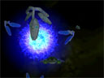
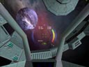
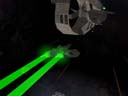

| What is Jumpgate? |
|
Jumpgate is a Massively Multiplayer
Online Flight Simulator - set in space.
It's not an MMORPG - it's an MMO space flight and combat game.
"Massively Multiplayer" means Jumpgate was originally written to handle thousands of players trading and fighting in the same virtual universe.
|
| What is Jumpgate like? |
|
Jumpgate drew inspiration from older single-player, free-form spaceflight games from the 1980's and 1990's such as Elite, Elite II, and Wing Commander: Privateer.
|
| Why haven't I heard of Jumpgate before? |
|
Jumpgate's publisher, 3DO, closed down just when Jumpgate released in 2001, so Jumpgate didn't get much publicity.
The developer, NetDevil, regained control of the game and has been operating it ever since.
|
| How is Jumpgate different? |
|
Other space MMOGs on the market are "space adventure RPGs" with point-and-click gameplay based on leveling or building up your character's skills.
Jumpgate is a flight simulator that requires actual pilot skill in docking, maneuvering, and combat. In other games, you click on something and watch your ship fight it. In Jumpgate you actually pilot your ship. Success or failure is up to you, not your stats.
|
| Can I fly with the mouse? |
|
Yes. Many players are quite adept at flying (even in combat) using the mouse and keyboard.
Jumpgate also offers support for three-axis joysticks with throttle control, suitable for flight simulators.
Third-party voice software, such as Teamspeak or Ventrilo, is also highly recommended. If you let go of the throttle or stick in a dogfight to type, you're probably toast.
|
| What is the flight model based on? |
|
Instead of an atmospheric or arcade flight model, such as those used in Wing Commander or the X-Wing games, Jumpgate uses a unique near-Newtonian physics model.
It's almost completely realistic spaceflight, except for a drag component that counters momentum and limits speed.
The drag was added solely for playability, as the developers found such a factor was crucial for learning to control the ship effectively.
|
| What does it cost to play Jumpgate? |
|
The client download is free, and there is a 14-day free trial for new customers. Thereafter, a subscription costs US$9.95/month.
|
| I'd like more information |
Click here to see more detailed info on Jumpgate.
|
| Downloads |
To download a copy of the latest Win32 Jumpgate installer for free, please follow one of the links below.
NOTE: Internet Explorer 6 Users: Be sure you have enabled folder view for FTP sites to use the above links. You can do this under Tools->Internet Options->Advanced.
|
| About Jumpgate | About the Jumpgate Universe | Join Now |
|